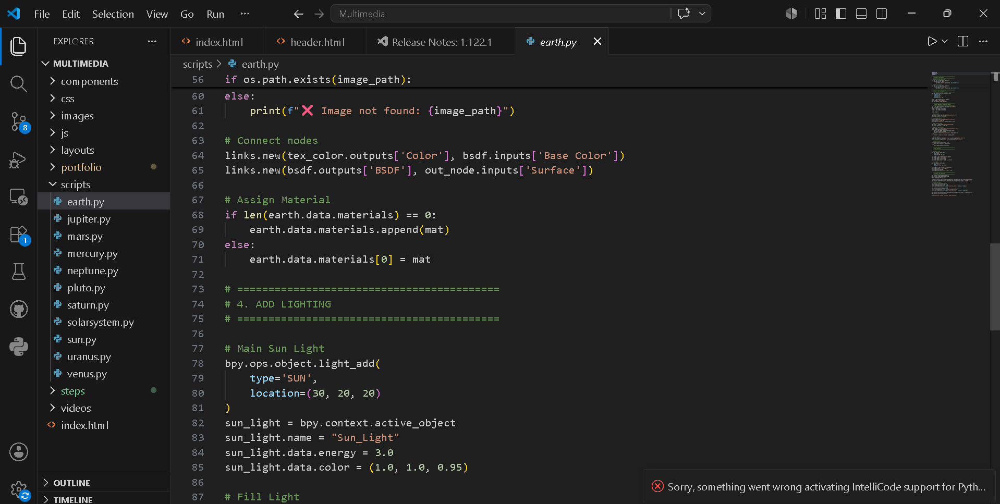
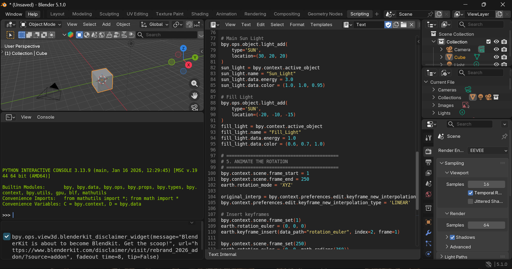
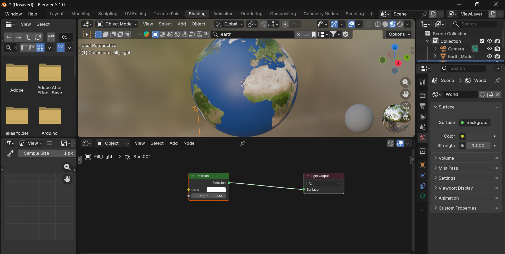
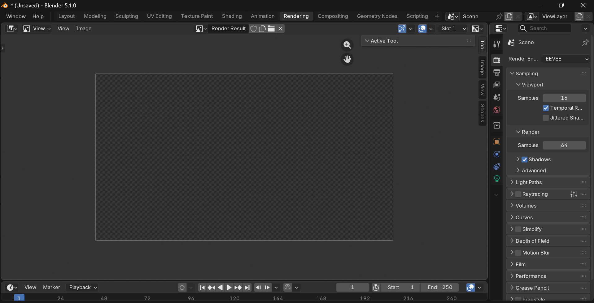

TECHNICAL OVERVIEW — SOLAR SYSTEM SIMULATION
Automated 3D Simulation
Exploring the intersection of code and 3D space. This visualization leverages Python to mathematically plot planetary orbits, automate keyframing, and generate accurate celestial scales within the Blender environment.
Grand Finale
SOLAR SYSTEM OVERVIEW
Technical Synthesis
THE COMPLETE CELESTIAL MECHANICS
A comprehensive visualization of all planetary bodies, demonstrating relative scales, orbital velocities, and gravitational relationships in a single synchronized simulation.
8
Major Planets
1
Star
200+
Moons
ORBIT CALCULATOR
INTERACTIVE WIDGET
WORKFLOW

01
CREATE THE SCRIPT
Write and set up your Python script to procedurally generate the full solar system geometry, including orbital paths, within Blender.

02
RUN THE SCRIPT
Execute your Python script directly in Blender to automate the generation of the solar system geometry and animation keyframes.

03
APPLY TEXTURES
Select and apply high-quality PBR textures using BlenderKit assets to bring each generated planetary body to life.

04
RENDER IT
Set up your final lighting, camera angles, and render settings to generate the complete animation or image sequence.
STAR
The Sun
The gravitational anchor of our system.